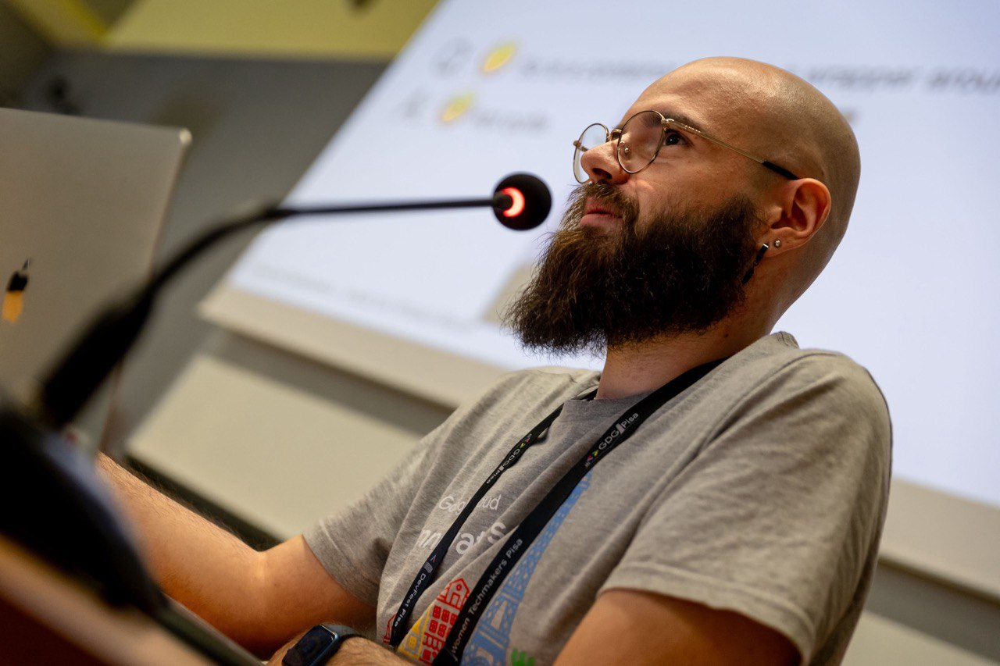

Best Paper Award
March 2025 · EuroSys co-located
Researcher · Edge-Cloud Computing Continuum · TU Munich
I'm a PhD candidate and researcher at the Chair of Connected Mobility of the Technical University of Munich. My research focuses on distributed AI systems in the edge and cloud computing continuum, with particular interest in service orchestration, service runtimes, and networking solutions in heterogeneous and mobile edge infrastructures.

Loading posts…
TUM School of CIT
Chair of Connected Mobility
Boltzmannstraße 3, 85748 Garching, Germany
Room 01.05.039